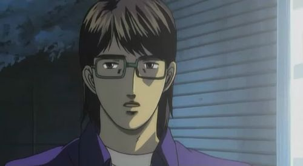

Sadamine is the first home course of the Northern Saitama Alliance. The course is located north of Shomaru and east of Tsuchisaka. It has some hairpins, but most corners aren’t so tight.
Kyoko Iwase
Kyoko Iwase is the uphill driver for the first battle against the Northern Saitama Alliance. She met Keisuke when her car broke down on the road, and Keisuke stopped to help her. She fell in love with him, not knowing he was the driver she was racing later that day. She drives a Mazda RX7 Type R (FD3S), which is the same car Keisuke owns. Important to know about Kyoko's RX7 is that it’s a single turbo. When the battle begins, Kyoko is motivated by the strong desire to prove herself to Keisuke. Upon entering the course, Keisuke is surprised by the bumpy road, and needs to adapt to it. Meanwhile, he is impressed by Kyoko’s excellent throttle control. But Kyoko makes a mistake, and Keisuke realizes that as much as a single-turbo FD is applying torque more effectively on rough surfaces, it’s a very peaky setup. Keisuke slightly bumps Kyoko’s RX7, and Kyoko loses boost, just as Keisuke had in his previous battle against Smiley Sakai. Keisuke gains the lead, and the battle against Kyoko, who wanted it to last forever, inevitably comes to an end.
Nobuhiko Akiyama
Nobuhiko Akiyama is fully aware he is going to lose this battle. His goal  is to gain as much information as possible for the second race against the Northern Saitama Alliance, this is why he chooses to chase. Ryosuke knows this, and prior to the battle, he tells Takumi to take it easy until the first hairpin, and then go all-out and escape Nobuhiko. Takumi leaves Akiyama far behind, and the battle ends. In the end, Nobuhiko lost the battle, but won information for the Northern Saitama Alliance.